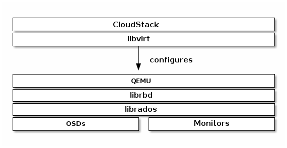

Notice
This document is for a development version of Ceph.
Block Devices and CloudStack
You may use Ceph Block Device images with CloudStack 4.0 and higher through
libvirt, which configures the QEMU interface to librbd. Ceph stripes
block device images as objects across the cluster, which means that large Ceph
Block Device images have better performance than a standalone server!
To use Ceph Block Devices with CloudStack 4.0 and higher, you must install QEMU,
libvirt, and CloudStack first. We recommend using a separate physical host
for your CloudStack installation. CloudStack recommends a minimum of 4GB of RAM
and a dual-core processor, but more CPU and RAM will perform better. The
following diagram depicts the CloudStack/Ceph technology stack.

Important
To use Ceph Block Devices with CloudStack, you must have access to a running Ceph Storage Cluster.
CloudStack integrates with Ceph’s block devices to provide CloudStack with a back end for CloudStack’s Primary Storage. The instructions below detail the setup for CloudStack Primary Storage.
Note
We recommend installing with Ubuntu 14.04 or later so that you can use package installation instead of having to compile libvirt from source.
Installing and configuring QEMU for use with CloudStack doesn’t require any
special handling. Ensure that you have a running Ceph Storage Cluster. Install
QEMU and configure it for use with Ceph; then, install libvirt version
0.9.13 or higher (you may need to compile from source) and ensure it is running
with Ceph.
Note
Ubuntu 14.04 and CentOS 7.2 will have libvirt with RBD storage
pool support enabled by default.
Create a Pool
By default, Ceph block devices use the rbd pool. Create a pool for
CloudStack NFS Primary Storage. Ensure your Ceph cluster is running, then create
the pool.
ceph osd pool create cloudstack
See Create a Pool for details on specifying the number of placement groups for your pools, and Placement Groups for details on the number of placement groups you should set for your pools.
A newly created pool must be initialized prior to use. Use the rbd tool
to initialize the pool:
rbd pool init cloudstack
Create a Ceph User
To access the Ceph cluster we require a Ceph user which has the correct
credentials to access the cloudstack pool we just created. Although we could
use client.admin for this, it’s recommended to create a user with only
access to the cloudstack pool.
ceph auth get-or-create client.cloudstack mon 'profile rbd' osd 'profile rbd pool=cloudstack'
Use the information returned by the command in the next step when adding the Primary Storage.
See User Management for additional details.
Add Primary Storage
To add a Ceph block device as Primary Storage, the steps include:
Log in to the CloudStack UI.
Click Infrastructure on the left side navigation bar.
Select View All under Primary Storage.
Click the Add Primary Storage button on the top right hand side.
Fill in the following information, according to your infrastructure setup:
Scope (i.e. Cluster or Zone-Wide).
Zone.
Pod.
Cluster.
Name of Primary Storage.
For Protocol, select
RBD.For Provider, select the appropriate provider type (i.e. DefaultPrimary, SolidFire, SolidFireShared, or CloudByte). Depending on the provider chosen, fill out the information pertinent to your setup.
Add cluster information (
cephxis supported).For RADOS Monitor, provide the IP addresses or DNS names of Ceph monitors. Please note that support for comma-separated list of IP addresses or DNS names is only present in Cloudstack v4.18.0.0 or later.
For RADOS Pool, provide the name of an RBD pool.
For RADOS User, provide a user that has sufficient rights to the RBD pool. Note: Do not include the
client.part of the user.For RADOS Secret, provide the secret the user’s secret.
Storage Tags are optional. Use tags at your own discretion. For more information about storage tags in CloudStack, refer to Storage Tags.
Click OK.
Create a Disk Offering
To create a new disk offering, refer to Create a New Disk Offering.
Create a disk offering so that it matches the rbd tag.
The StoragePoolAllocator will choose the rbd
pool when searching for a suitable storage pool. If the disk offering doesn’t
match the rbd tag, the StoragePoolAllocator may select the pool you
created (e.g., cloudstack).
Limitations
Until v4.17.1.0, CloudStack will only bind to one monitor at a time. You can however use multiple DNS A or AAAA records in a round-robin fashion to spread connections over multiple monitors.
Brought to you by the Ceph Foundation
The Ceph Documentation is a community resource funded and hosted by the non-profit Ceph Foundation. If you would like to support this and our other efforts, please consider joining now.